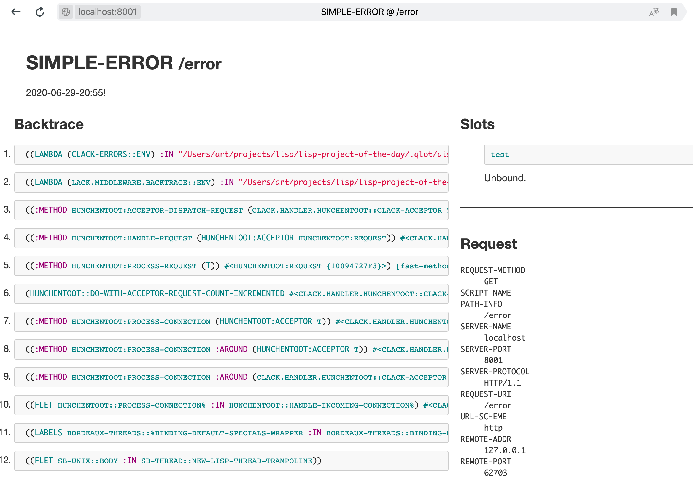

Lisp Project of the Day
clack-errors
You can support this project by donating at:


Or see the list of project sponsors.
clack-errors
| Documentation | 🤨 |
| Docstrings | 🥺 |
| Tests | 😀 |
| Examples | 😀 |
| RepositoryActivity | 🤨 |
| CI | 😀 |
This is the Clack middleware which adds a nicely rendered error page for your website. It pretends to be a clone of the RoR's better_errors library but has only a limited number of features.
Clack-errors is able to show a backtrace and content of the env variable. But it does not allow you to inspect the variables of stack frames and does not show HTTP headers.
It has a demo application which can be loaded as :clack-errors-demo ASDF system.
If you'll do a (clack-errors-demo:start) it will start a webserver on the 8000 port.
Access the http://localhost:8001/error URL to see the page like this:

You can customize the behaviour of the middleware by two options: :debug and :prod-render. :debug is t by default and if you set it to the nil, middleware will not show backtrace. It will call :prod-render function instead.
Also, you might override some internal variables like +dev-template+, *dev-css-path*, etc. But it is better to send a pull-request which will allow redefining dev renderer.
Personally, I'm don't see the need in such middleware in the Common Lisp web application, because you have much better backtrace inspection tool in the SLIME or other IDE.
Brought to you by 40Ants under